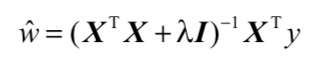

线性回归意味着可以将输入项分别乘以一些常量，再将结果加起来得到输出
0x01 LR
回归的目的是预测数值型的目标值
线性回归意味着可以将输入项分别乘以一些常量，再将结果加起来得到输出
优点：
- 结果易于理解
- 计算不复杂
缺点：
- 对非线性数据拟合不好
适用数据类型
- 标称型
- 数值型
0x02 最佳拟合直线
将数据视为直线进行建模
def standRegres(xArr, yArr):
'''
计算最佳拟合直线
:param xArr:
:param yArr:
:return:
'''
xMat = mat(xArr)
yMat = mat(yArr).T #Returns the transpose of the matrix
xTx = xMat.T*xMat
if linalg.det(xTx) == 0.0:
print("This matrix is singular, cannot do inverse")
return
ws = xTx.I * (xMat.T*yMat)
return ws
在用内积来预测y的时候，第一维将乘以前面的常数X0，第二维将乘以输入变量X1
因为前面假定了X0=1，所以最终会得到y=ws[0]+ws[1]*X1
- 局部加权线性回归
给待预测点附近的每个点赋予一定的权重
每次预测均需要事先选取出对应的数据子集
使用“核”来对附近的点赋予更高的权重
def lwlr(testPoint, xArr, yArr, k=1.0):
'''
局部加权线性回归
给定x空间中的任意一点，计算出对应的预测值yHat
:param testPoint:
:param xArr:
:param yArr:
:param k:
:return:
'''
xMat = mat(xArr)
yMat = mat(yArr).T
m = shape(xMat)[0]
weights = mat(eye((m))) #对角权重矩阵
for j in range(m):
diffMat = testPoint - xMat[j, :] #
weights[j, j] = exp(diffMat*diffMat.T/(-2.0*k**2))
xTx = xMat.T * (weights * xMat)
if linalg.det(xTx) == 0.0:
print("This matrix is singular, cannot do inverse")
return
ws = xTx.I * (xMat.T * (weights * yMat))
return testPoint * ws
- 缩减系数
岭回归

- 用来处理特征数多于样本数的情况
- 用于在估计中加入偏差
def ridgeRegres(xMat, yMat, lam=0.2):
'''
计算回归系数
:param xMat:
:param yMat:
:param lam:
:return:
'''
xTx = xMat.T*xMat
denom = xTx + eye(shape(xMat)[1])*lam
if linalg.det(denom) == 0.0:
print("This matrix is singular, cannot do inverse")
return
ws = denom.I * (xMat.T*yMat)
return ws
def ridgeTest(xArr, yArr):
xMat = mat(xArr)
yMat=mat(yArr).T
yMean = mean(yMat, 0)
yMat = yMat - yMean
xMeans = mean(xMat, 0)
xVar = var(xMat, 0)
xMat = (xMat - xMeans)/xVar
numTestPts = 30
wMat = zeros((numTestPts, shape(xMat)[1]))
for i in range(numTestPts):
ws = ridgeRegres(xMat, yMat, exp(i-10))
wMat[i, :] = ws.T
return wMat
lasso
前向逐步回归
0x03 实例1
pass
参考
[1] https://www.manning.com/books/machine-learning-in-action
本文由 蓝骨
创作，采用 知识共享署名4.0 国际许可协议进行许可
本站文章除注明转载/出处外，均为本站原创或翻译，转载前请务必署名
最后编辑时间为: 2018-10-01T22:00:38+08:00